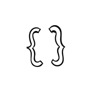
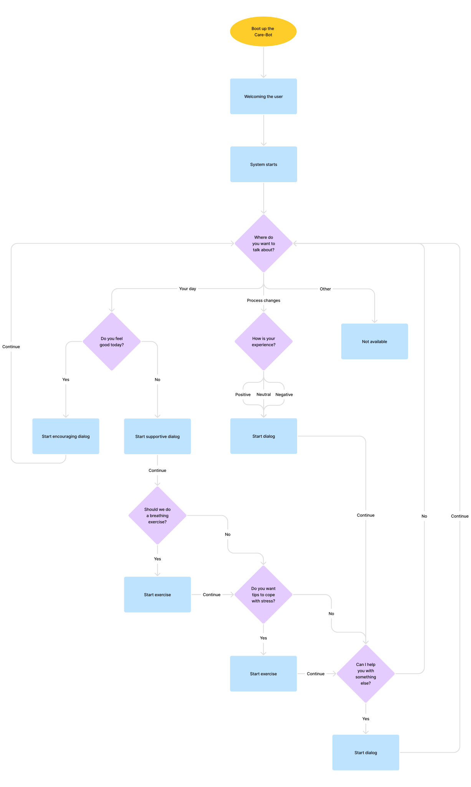
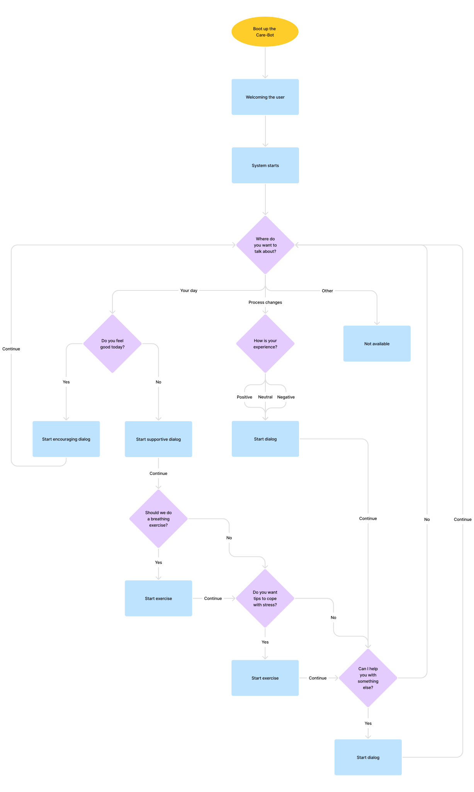

Project
Improve the employee experience during a change process

Summary
I helped to develop a employee experience enhancer that reduces stress and anxiety at work sights

Responsibilities
User Experience Design
User Interface Design
Project
Improve the employee experience during a change process
Summary
I helped to develop a employee experience enhancer that reduces stress and anxiety at work sights
Responsibilities
User Experience Design
User Interface Design
Research
I started this project with a research phase, during this phase the target group has been narrowed to office workers. Based on the data it was clear that:
- Employees often don’t feel heard and taken seriously because they don’t see changes despite them giving feedback
- Employees feel overwhelmed because of the high pace in which development takes place
- Employees resist process changes because of insecurities such as potential financial instability and lack of employment
The idea to develop a system that has care-taking at the center of attention came forth from these insights. Especially since change in work environments is inevitable; this led to the decision to focus on the well being of the employees and thus try to improve the employee experience during the so-called “resistance phase”.
Develop
Iteration 1
During iteration 1 the focus was on building a solid and logical structure. I’ve done this using a flowchart, that shaped the overall flow of the prototype that I was going to craft. The flowchart was a foundation for the prototype, for which I simultaneously build a low-key design system. This design system was based on simplicity and robotic elements. In which I tried to achieve an overall friendly, calm and welcoming approach. I tried to attain this using inviting forms and neutral colours.
 

Iteration 2
The CareBot is primarily a system that will convey interaction, in this stage via type and rather simple questions. I choose this manner of communication so that I’d be usable for all digital skill levels. The system would help the user based on data input and prompt-driven machine learning. The development of this system has been primarily based on the usage of desktop, but is also able to scale down to smaller screens such as tablet and smartphone.
During iteration 2 I’ve focused on producing and designing the CareBot. This based on the flowchart and feedback that I’ve gathered.
Deliver
The last phase was dedicated to minor fixes, such as bugs and more in depth development of the prewritten questions and answers. As well as preparing an in-depth presentation for the stakeholders.
The product is consistent with the given assignment. It takes care of employees, enables them to vent, get practical hands-on tips and exercises to enhance their employee experience. Whether or not the CareBot will be able to help on a long term basis has yet to be discovered. Still, this is one of many steps toward good psychological health care at work sites.